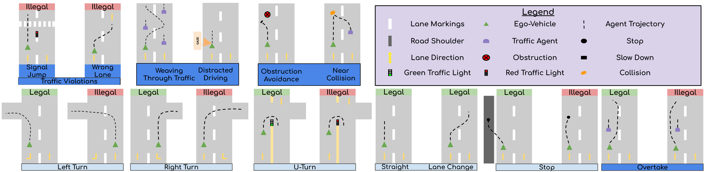
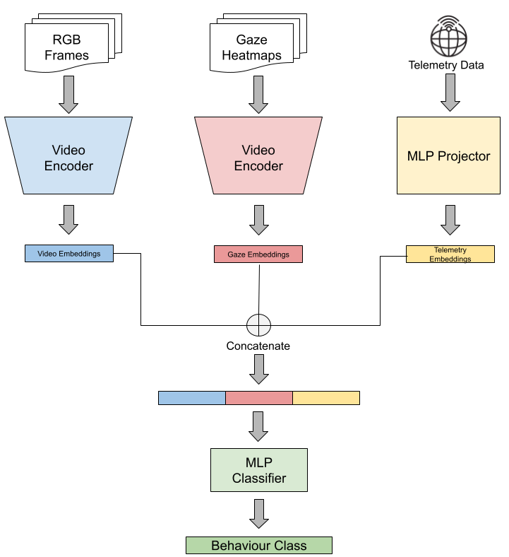

MOTOR: A Multimodal Dataset for Two-Wheeler Rider Behavior Understanding
Abstract
Two-wheelers account for a disproportionately high share of road fatalities in the Global South. Research on two-wheeler rider behavior, however, lags far behind four-wheelers, where multimodal datasets have driven major advances in Advanced Driver Assistance Systems (ADAS). To address this gap, we present the MOtorized TwO-wheeler Rider (MOTOR) dataset, the first large-scale, multi-view, multimodal resource dedicated to two-wheelers in dense, unstructured traffic. MOTOR comprises 2,500 sequences (25+ hours of video data) collected from 16 riders and integrates synchronized front, rear, and helmet videos, rider eye-gaze from wearable trackers, on-road audio, and telemetry (GPS, accelerometer, gyroscope). Rich annotations capture traffic context, rider state, 12 riding maneuvers spanning conventional and unconventional behaviors, and legality labels (Legal, Illegal, Unspecified). We benchmark rider behavior recognition and maneuver legality classification using state-of-the-art video action recognition backbones (CNN and Transformer-based), extended with multimodal fusion, and find that combining RGB, gaze, and telemetry consistently yields the best performance. MOTOR thus provides a unique foundation for advancing safety-critical understanding of two-wheeler riding.
Two-Wheeler Rider Properties
The MOTOR dataset captures the unique characteristics of two-wheeler riding: sudden acceleration and braking, significant lean angles during maneuvers, minimal structural protection, and close interactions in dense traffic. The video below illustrates the diverse rider properties and traffic scenarios captured in our dataset.
Two-Wheeler Rider Behaviours
Overview of all conventional and unconventional rider behaviours annotated in the MOTOR dataset, along with their legality classification.

MOTOR Annotation Examples
MOTOR features rich multi-level annotations: traffic scene context (road type, lane markings, traffic density), rider state (GPS trajectories, gaze behavior, speed, lean angle), 12 riding maneuver classes covering both conventional (turns, lane changes, stops) and unconventional behaviors (weaving, obstruction avoidance, traffic violations, near-collisions), and legality labels (Legal, Illegal, Unspecified) for each maneuver.
Evaluation Tasks
We evaluate two tasks on the MOTOR dataset:
- Rider Behavior Classification: Classify rider maneuvers into 11 classes spanning conventional (e.g., turns, lane changes, overtakes) and unconventional (e.g., weaving, obstruction avoidance, traffic violations) behaviors. This task tests a model's ability to capture diverse and fine-grained two-wheeler actions in dense traffic.
- Maneuver Legality Classification: Predict whether a rider maneuver is Legal, Illegal, or Unspecified — going beyond behavior recognition to explicitly assess compliance with traffic rules, crucial for safety-critical and traffic-aware systems.
Baseline Architecture
We design a three-stream late-fusion architecture integrating ego-vehicle frontal-view video, rider eye-gaze, and vehicle telemetry (speed and lean angle) as the baseline for both rider behavior and legality classification using CNN-based (S3D, ResNet3D) and Transformer-based (Video Swin Transformer, MViTv2) backbones.

Results
Rider Behavior Classification
Comparison of CNN and Transformer-based baselines on MOTOR dataset across different modality combinations.
| Baseline | Data Modalities | ACC (↑) | F1 (↑) | Params (M) (↓) |
|---|---|---|---|---|
| CNN-based Backbones | ||||
| S3D | RGB | 38.3 | 35.3 | 2.4 |
| RGB+Gaze | 37.3 | 34.2 | 4.7 | |
| RGB+Telemetry | 39.2 | 35.8 | 2.5 | |
| RGB+Gaze+Telemetry | 39.3 | 34.2 | 4.85 | |
| ResNet3D | RGB | 48.7 | 45.4 | 14.0 |
| RGB+Gaze | 48.2 | 47.2 | 28.0 | |
| RGB+Telemetry | 48.8 | 47.1 | 14.1 | |
| RGB+Gaze+Telemetry | 49.1 | 48.1 | 28.5 | |
| Transformer-based Backbones | ||||
| MViTv2 | RGB | 32.6 | 32.4 | 7.5 |
| RGB+Gaze | 39.4 | 34.5 | 15.01 | |
| RGB+Telemetry | 39.8 | 36.1 | 7.6 | |
| RGB+Gaze+Telemetry | 41.5 | 37.5 | 15.1 | |
| Swin T | RGB | 47.7 | 46.3 | 7.6 |
| RGB+Gaze | 50.3 | 46.9 | 15.1 | |
| RGB+Telemetry | 51.3 | 47.2 | 7.7 | |
| RGB+Gaze+Telemetry | 52.9 | 51.5 | 15.2 | |
Rider Legality Classification
CNN and Transformer-based baselines on MOTOR dataset across different modality combinations.
| Baseline | Data Modalities | ACC (↑) | F1 (↑) | Params (M) (↓) |
|---|---|---|---|---|
| CNN-based Backbones | ||||
| S3D | RGB | 62.9 | 48.2 | 2.4 |
| RGB+Gaze | 62.4 | 48.8 | 4.7 | |
| RGB+Telemetry | 64.5 | 47.8 | 2.5 | |
| RGB+Gaze+Telemetry | 64.9 | 51.3 | 4.8 | |
| ResNet3D | RGB | 59.6 | 45.1 | 14.0 |
| RGB+Gaze | 60.3 | 45.7 | 28.0 | |
| RGB+Telemetry | 61.8 | 46.9 | 14.1 | |
| RGB+Gaze+Telemetry | 62.9 | 47.7 | 28.5 | |
| Transformer-based Backbones | ||||
| MViTv2 | RGB | 58.2 | 45.8 | 7.5 |
| RGB+Gaze | 61.9 | 46.2 | 15.0 | |
| RGB+Telemetry | 62.6 | 49.4 | 7.6 | |
| RGB+Gaze+Telemetry | 64.3 | 52.1 | 15.1 | |
| Swin T | RGB | 58.4 | 47.9 | 7.6 |
| RGB+Gaze | 62.7 | 48.5 | 15.1 | |
| RGB+Telemetry | 65.0 | 53.5 | 7.7 | |
| RGB+Gaze+Telemetry | 69.0 | 53.6 | 15.2 | |
Conclusions
In summary, through extensive experiments and analysis we highlight some key lessons for two-wheeler behavior: gaze provides complementary attention cues, telemetry captures dominant kinematic patterns such as lean and speed, and unconventional behaviors remain challenging to classify due to their variability and overlap with conventional maneuvers. Beyond benchmarking, MOTOR offers a valuable resource for the research community to explore legality-aware modeling and the development of safety-critical applications tailored to two-wheelers.